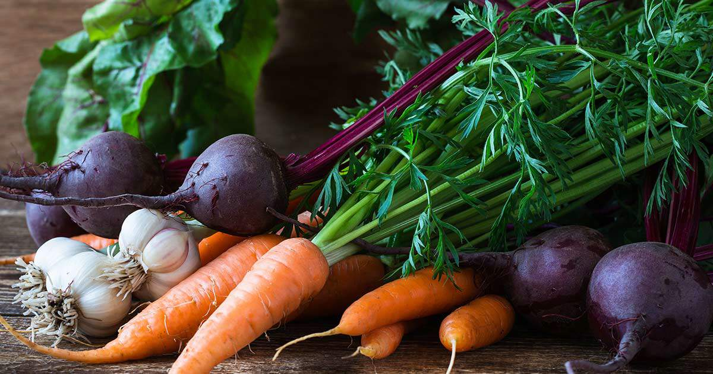

Enter to WIN! Happy cat of the month.
Take a photo of your cat enjoying Caddiction product and send it to 'event@caddiction.com'
Winner will receive a FREE Caddiction dry cat food (3kg)

Organic Cat Food
Est. 2023
Welcome to Caddiction, your trusted destination for premium organic cat food! Our passion for feline health and well-being drives us to provide the finest selection of wholesome, natural, and sustainably sourced cat food products. With a mission to promote a happier and healthier life for your beloved feline companions, we've dedicated ourselves to offering only the best.
Our journey began with a simple idea: to provide cat owners with a one-stop-shop for all their organic cat food needs. We believe in transparency and integrity, which is why we work closely with trusted suppliers who share our values. This ensures that every product we offer meets the highest standards of organic certification, free from artificial additives, preservatives, and GMOs.
Thank you for choosing Caddiction as your partner in providing the best for your feline friends! Together, we can nurture happier and healthier lives, one bowl of organic cat food at a time.
To become the premier destination for organic cat food enthusiasts by providing a wide range of high-quality, sustainably sourced, and nutritionally balanced products while promoting responsible pet ownership and eco-conscious values.
Take a photo of your cat enjoying Caddiction product and send it to 'event@caddiction.com'
Winner will receive a FREE Caddiction dry cat food (3kg)